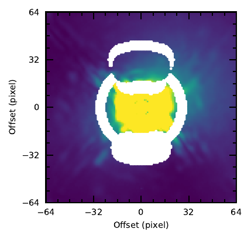
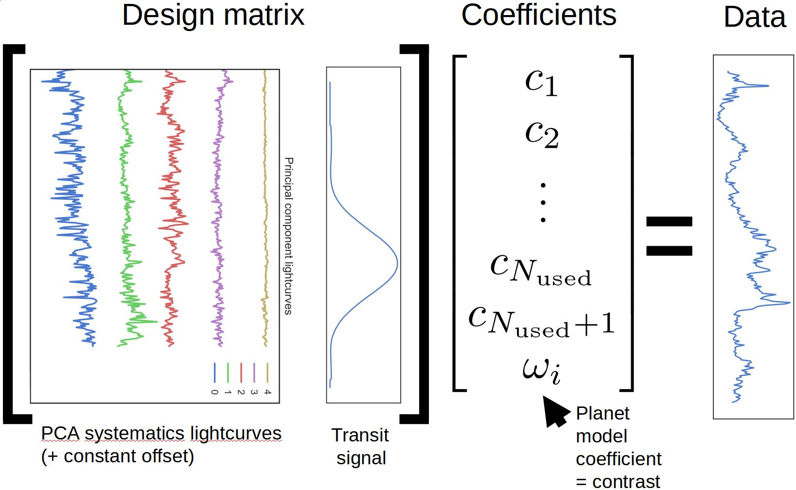
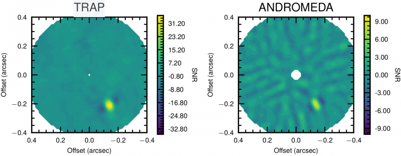
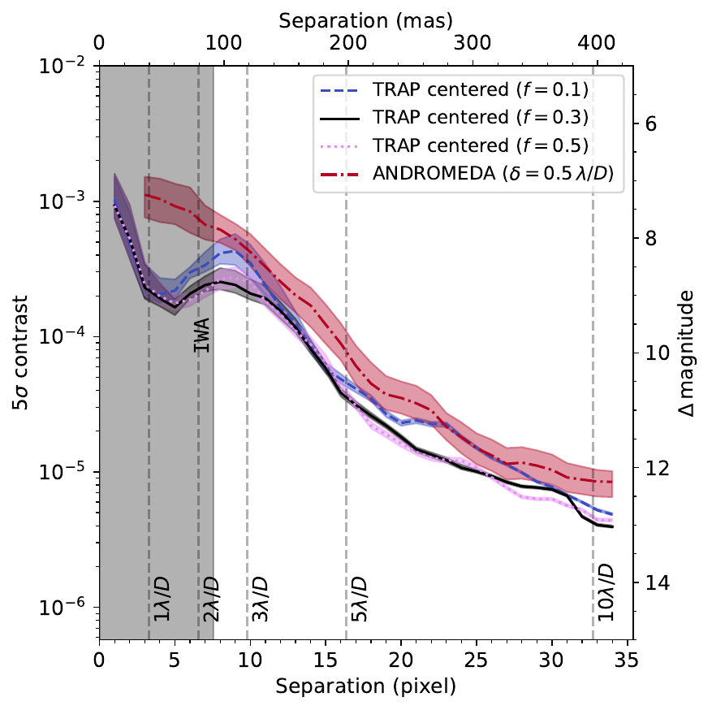

Due to the rotation of the field-of-view, the companion signal moves along an arc through the background noise pattern.
Figure 1: SPHERE data with injected bright signal north of the host star, showing the sky rotation’s effect on a companion.
Traditionally one models the background at the planet location using frames displaced in time until the planet has moved sufficiently. This requires the background to remain stable over those timescales. Here we replace the spatial model (combination of images) with a temporal model (combination of pixel lightcurves), constructing a forward model for the time series of each pixel — analogous to lightcurve modeling in transit observations.
Modeling confounding systematics in time-series data is well studied (Schölkopf et al. 2015). As long as systematics share a common underlying cause, half-sibling regression can model them using other similarly affected timeseries. We use non-local pixels (similar separation, surrounding and mirrored areas) as training data, explicitly excluding the region affected by planet signal to rule out self-subtraction. A PCA decomposition of the lightcurves reduces collinearity.

Figure 2: Non-local training pixel selection. The white area marks pixels whose lightcurves train the temporal systematics model.
We simultaneously fit the temporal systematics model and the expected planet signal for each pixel position. The system of equations for a single pixel is shown in Figure 3.

Figure 3: System of linear equations solved simultaneously for the systematics model (principal components) and the planet forward model.
The planet amplitude and uncertainty are determined per pixel; the final contrast is the noise-weighted average. Repeating over a grid of sky positions yields a detection map, normalized empirically for the simplifying assumptions in the least-squares fit.
We compare against ANDROMEDA (Cantalloube et al. 2015), which follows a similar forward-modelling approach. ANDROMEDA has been validated on the same SPHERE datasets (e.g. 51 Eridani b, Samland et al. 2017).

Figure 4: SNR map for β Pic b using TRAP and ANDROMEDA.
Figure 4 shows a 4× SNR improvement for β Pic b (4-second integrations). The temporal model requires no protection angle, so systematics can be modelled even at the shortest timescales. Binning to 64-second integrations — the common but suboptimal choice — brings TRAP and ANDROMEDA to similar SNR, confirming temporal sampling as the primary driver of the gain.

Figure 5: Contrast curves for TRAP (varying PC fraction) vs ANDROMEDA (0.5λ/D protection angle). Shaded band: 14–86 percentile range along the azimuth.
At the smallest separations, where protection angles dominate, the temporal model gain is largest. Even at wider separations, short-integration TRAP improves contrast by a factor of two by reducing systematic noise.
By using a temporal model we achieve an important contrast boost at small angular separations — the parameter space most relevant for finding Jupiter analogues with direct imaging. Shorter integration times, previously underutilized because protection angles negated their benefit, become advantageous with TRAP. The method also helps for data with limited field-of-view rotation and space-based roll-angle observations.
The temporal and spatial approaches are complementary: they optimize different quantities (temporal vs. spatial similarity). Applying a LOCI-like approach to TRAP residuals — which are temporally white but spatially correlated — could make optimal use of all available information. The framework further extends naturally to polychromatic training data.
The code is available on GitHub: m-samland/trap
Cantalloube, F. & Mugnier, L. M., A&A 582, A89 (2015) — ADS
Lafrenière, D. & Marois, C., ApJ 660, 770 (2007) — ADS
Samland, M., Mollière, P., et al., A&A 603, A57 (2017) — ADS
Samland, M., Bouwman, J., et al., A&A 646, A24 (2021) — ADS
Schölkopf, B. & Hogg, D. W., arXiv:1505.03036 (2015) — ADS